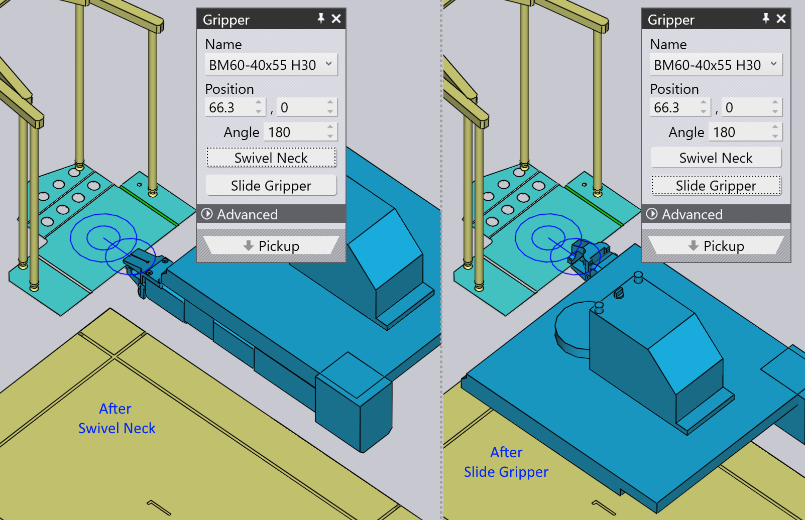

디스펜서에서 픽업
소형 파트는 _기계식 그리퍼_를 사용하여 처리하는데, TecZone Bend에서는 이를 _조 그리퍼_라고도 합니다. 파트가 약 A4 크기보다 작으면, TecZone Bend는 조 그리퍼를 사용하여 자동으로 전환합니다. 이 그리퍼는 _분배 스테이션_에서만 파트를 집어올릴 수 있습니다(_블랭크 디스펜서_라고도 알려짐). 이 파라미터는 이 픽업 처리에 영향을 미칩니다:
-
기계 셀에서 디스펜서의 위치와 방향.
-
디스펜서에서 파트의 방향.
-
파트에서 조 그리퍼의 위치 및 방향.
이 모든 설정을 편집하는 데 사용되는 패널이 아래에 표시됩니다. 이들은 모두 위/아래 네비게이션 링크로 상호연결되어 있으며, 논리적 순서에 따라 다른 패널로 연결됩니다:

위의 이미지에서 볼 수 있듯이 이 패널은 시뮬레이션에서 다양한 객체를 클릭하기만 하면 쉽게 액세스할 수 있습니다:
-
디스펜서 패널을 열려면 디스펜서를 클릭합니다.
-
디스펜서에서 파트의 방향을 편집하려면, 디스펜서에 있는 블랭크를 클릭합니다(네비게이터의 P 열을 클릭하여 현재 스테이지를 먼저 픽업으로 설정).
-
파트의 그리퍼 고정 위치를 편집하려면 그리퍼를 클릭합니다.
디스펜서 패널
디스펜서를 클릭하여 디스펜서 패널을 엽니다. TecZone Bend는 파트를 디스펜서의 _정렬 코너_에 놓고 석션 그리퍼 암을 파트의 코너에 위치시킵니다. 이 패널을 사용하여 암 컨피규레이션과 디스펜서의 위치를 편집할 수 있습니다.

-
Position, Angle 및 Lift 설정을 사용하여 디스펜서의 위치와 방향을 설정하고, 셀에서 실제 위치와 일치하도록 만듭니다.
석션 컨피규레이션
석션 설정에서 설정 내용들은 석션 암을 컨피규레이션하는 데 사용됩니다.이러한 설정은 단지 표시용일 뿐이며, NC 프로그램에서 기계로 전송되지 않으므로 중요하지 않습니다. 기계의 조작자는 암을 수동으로 셋업해야 합니다(아마도 NC 프로그램에 첨부된 셋업 시트를 참조하면 됩니다).
-
하나의 Arm 을 선택하고 Angle 및 Length 를 편집하여 석션컵이 파트에 위치할 때까지 암을 회전하고 확장합니다.
-
Type 설정을 사용하여 디스펜서에서 장착된 석션컵을 변경합니다.
| 암의 각도와 길이 컨피규레이션은 TecZone Bend가 생성한 NC 프로그램의 일부가 아니기 때문에, 실제로 암이 서로 교차하거나 엇갈리지 않는지 확인하지는 않습니다. |
픽업 패널
이 픽업 패널은 디스펜서의 파트 방향을 셋업하는 데 사용됩니다.파트를 회전하거나 뒤집을 때, TecZone Bend는 파트를 고정할 적절한 _평면_을 선택합니다(그리퍼는 항상 한 방향으로만 들어올 수 있기 때문에).디스펜서에 놓인 블랭크를 클릭하면 이 패널을 불러올 수 있습니다.

-
이 Rotate Part 버튼은 파트를 90도 회전하는 데 사용됩니다.위의 이미지에서, 해당 파트는 디스펜서 코너를 기준으로 참조하기에 이상적인 방향이 아닙니다. 다음은 몇 번의 회전 작업 후 더 나은 결과입니다:

-
디스펜서에서 블랭크를 반대로 뒤집은 경우 Flip Part 버튼을 사용하여, 모델을 뒤집어서 일치시킬 수 있습니다:

임의의 가장자리 정렬
때로는 이 90° 회전으로는 충분하지 않을 수 있습니다. 디스펜서에서 Z 레퍼런스에 대상 가장자리(아래 이미지에 표시됨)를 정렬하고 싶다고 가정합시다:
Align Edge 을 클릭하고 Align with Z 옵션을 팝업창에서 선택합니다. 그런 다음 대상 가장자리 근처의 파트를 클릭합니다.이제 해당 가장자리가 디스펜서 레퍼런스에 정렬됩니다. 결과가 아래에 표시됩니다[1](이 새로운 정렬에 더 잘 맞도록 그리퍼 위치와 방향을 약간 조정한 후):

그리퍼 패널
이 그리퍼 패널은 파트 위에 그리퍼를 위치시키고 다른 그리퍼로 전환하고, 파트를 집어 올릴 때 그리퍼의 회전 및 슬라이드 축을 컨피규레이션하는 데 사용됩니다.

-
Name 목록을 사용하여 이 기계에 사용 가능한 조 그리퍼 목록에서 새로운 그리퍼를 선택합니다. 목록에서 이름을 네비게이션하면, 그리퍼의 썸네일이 표시됩니다:

-
Position 및 Angle 설정들을 사용하여 그리퍼를 _평면 그리핑_의 중심점을 기준으로 위치와 방향을 지정합니다. 이 중심은 위 이미지에서 이중 원으로 표시됩니다. 위에서 본 동일한 그리퍼가 여기 있습니다. 위치와 각도를 조정한 후의 모습입니다:

-
Swivel Neck 및 Slide Gripper 버튼들을 사용하여 그리퍼의 목 및 슬라이드 컨피규레이션을 변경합니다. 위의 첫 번째 컨피규레이션에서 시작하여 이러한 작업을 적용한 결과는 다음과 같습니다:
 -
Use Vacuum Grip 버튼은 석션 그리퍼를 사용하여 파트를 전환합니다. 이는 사실상 해당 파트를 완전히 _재계산_한 것입니다. 디스펜서는 더 이상 사용되지 않으며 파트는 대신 팔레트에서 픽업됩니다. 벤딩 시퀀스, 파지 작업 및 하적 패턴은 모두 석션 그리퍼에 보다 적합하도록 재계산됩니다.